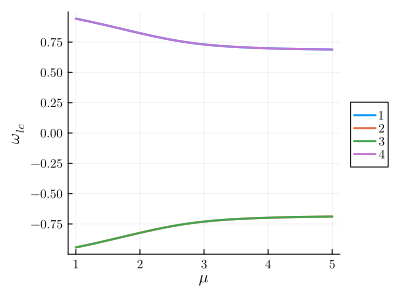
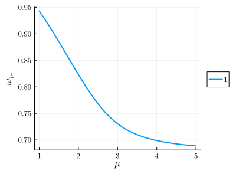

Limit cycles
In contrast to the previous examples, limit cycle problems feature harmonic(s) whose numerical value is not imposed externally. We shall construct our HarmonicEquation as usual, but identify this harmonic as an extra variable, rather than a fixed parameter.
Non-driven system - the van der Pol oscillator
Here we solve the equation of motion of the van der Pol oscillator. This is a single-variable second-order ODE with continuous time-translation symmetry (i.e., no 'clock' imposing a frequency and/or phase), which displays periodic solutions known as relaxation oscillations. For more detail, refer also to arXiv:2308.06092.
using HarmonicBalance
@variables ω_lc, t, ω0, x(t), μ
diff_eq = DifferentialEquation(d(d(x,t),t) - μ*(1-x^2) * d(x,t) + x, x)Choosing to expand the motion of $x(t)$ using $ω_{lc}$, $3ω_{lc}$ and $5ω_{lc}$, we define
[add_harmonic!(diff_eq, x, i*ω_lc) for i in 1:2:5]and obtain 6 harmonic equations,
harmonic_eq = get_harmonic_equations(diff_eq)A set of 6 harmonic equations
Variables: u1(T), v1(T), u2(T), v2(T), u3(T), v3(T)
Parameters: ω_lc, μSo far, $ω_{lc}$ appears as any other harmonic. However, it is not fixed by any external drive or 'clock', instead, it emerges out of a Hopf instability in the system. We can verify that fixing ω_lc and calling get_steady_states.
get_steady_states(harmonic_eq, μ => 1:0.1:5, ω_lc => 1.2)gives a single solution with zero amplitude.
Taking instead $ω_{lc}$ as a variable to be solved for results in a phase freedom, implying an infinite number of solutions. To perform the gauge-fixing procedure, we call get_limit_cycles, marking the limit cycle harmonic as a keyword argument,
import HarmonicBalance.LimitCycles: get_limit_cycles
result = get_limit_cycles(harmonic_eq, μ => 1:0.1:5, (), cycle_harmonic = ω_lc)A steady state result for 41 parameter points
Solution branches: 100
of which real: 4
of which stable: 4 The results show a fourfold degeneracy of solutions. The automatically created solution class unique_cycle filters the degeneracy out,
plot(result, ω_lc)
plot(result, ω_lc, class="unique_cycle")
Driven system - coupled Duffings
Under construction, see Chapter 6.2.2 of Jan's thesis